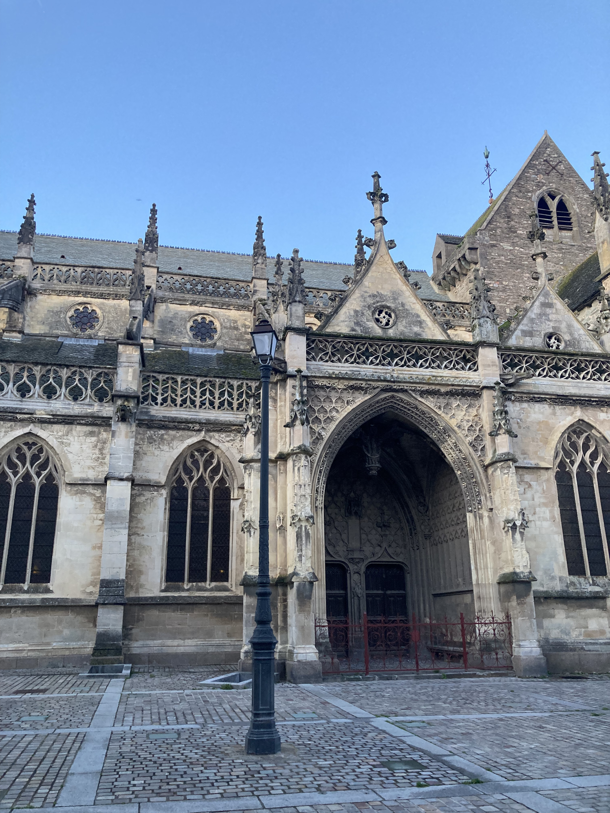
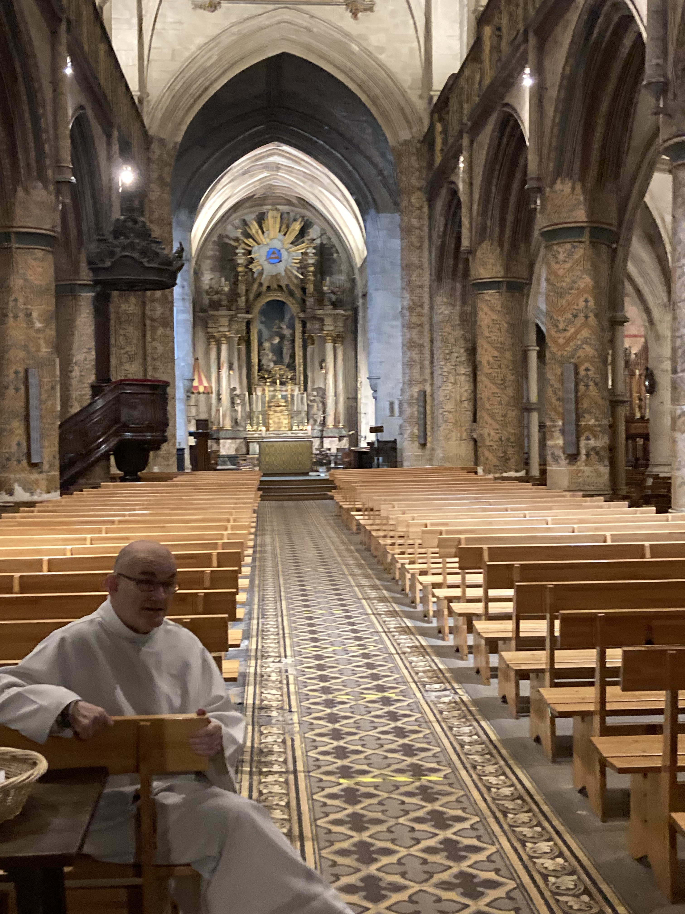
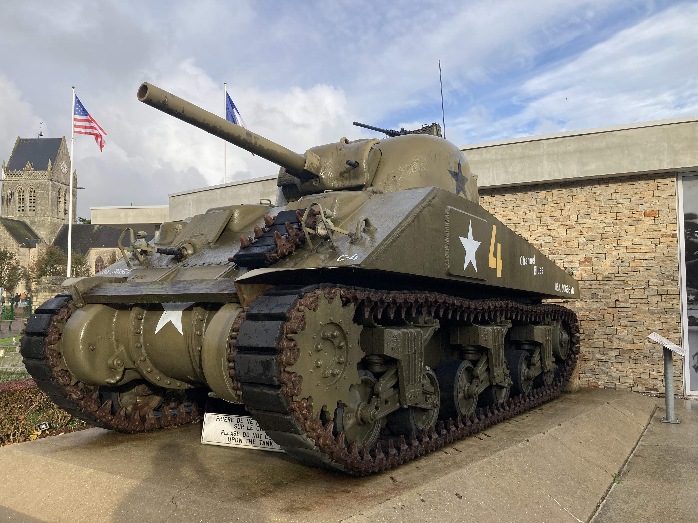

The Abbey
The abbey crowns the Mont and is the architectural focus of the site. Check current opening arrangements and ticket information before travelling rather than relying on fixed times or prices in an evergreen guide.
Normandy gave us two completely different experiences of France. At Omaha Beach and the American Cemetery, the scale of D-Day became far more real simply by standing in the places where it happened. Then there was Mont Saint-Michel — a medieval abbey rising from a tidal bay and one of those French landmarks that is every bit as dramatic in person as you hope it will be.
Our main France story records visiting Omaha Beach and the American Cemetery as one of the most moving experiences of our travels in France. The importance of the area needs very little embellishment: being physically present on that coastline gives the events of June 1944 a scale that is difficult to get from a screen or a history book.
For us, this is a part of Normandy to approach with time and respect rather than as a list of attractions to race through. The beaches, memorials and cemeteries form part of a much larger D-Day landscape, and a guided visit can be useful if you want the military history and geography explained in context.
Omaha was one of the Allied landing beaches on D-Day. Our experience here was about understanding the setting itself — the beach, the scale and the distance between the history we'd learned and the physical place in front of us.
The Normandy American Cemetery at Colleville-sur-Mer overlooks Omaha Beach. It is a place of remembrance, and we have deliberately kept this section restrained rather than dressing it up with invented emotional detail.
Planning note: D-Day sites are spread across the Normandy coast. If the history is your main reason for visiting, allow enough time rather than assuming everything sits beside one another.
Mont Saint-Michel is the other Normandy experience that stands out in our France story. After the sobriety of the D-Day coast, this is a completely different kind of encounter: a medieval abbey and settlement rising from a tidal bay, with a silhouette that has become one of the defining images of France.
Our existing France page remembers the sight of Mont Saint-Michel rising from the bay at low tide. That's strong enough without inventing a restaurant, a hotel, a particular staircase or a perfectly timed sunset we haven't established in the source.
The abbey crowns the Mont and is the architectural focus of the site. Check current opening arrangements and ticket information before travelling rather than relying on fixed times or prices in an evergreen guide.
The tides are part of what makes Mont Saint-Michel so distinctive. If you're planning anything beyond the main visitor route, use current official tide and safety information.
Part of the experience is simply seeing the Mont emerge across the open landscape. It is one of those rare landmarks where the wider setting matters almost as much as the monument itself.
Our France archive contains older travel images that aren't individually identified by location in the source file. Rather than falsely label one as Omaha Beach or Mont Saint-Michel, we're keeping the captions honest and broad.


.jpg)
Caen is one of Normandy's key cities and makes a natural virtual companion to a page centred on the region's D-Day history. We're presenting it as a way to explore more of Normandy online — not claiming a personal Caen visit that isn't established in our source material.
Some of our own photos from Normandy — historic churches, remarkable interiors and reminders of the region's wartime history.



If you want help with the logistics or historical context, browse current Normandy experiences below. The tours shown are planning options; we're not claiming that we personally took the exact tours displayed by the widget.
Disclosure: Some links on this page are affiliate links. If you book through them, we may earn a small commission at no extra cost to you.
Common questions
Normandy is one chapter of our much bigger France story, spanning Brittany, Paris, the Loire Valley, central France, Provence, the Côte d'Azur and Alsace.